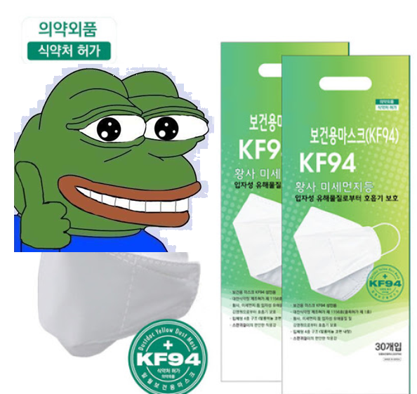

코로나 시대 건강을 지키는 법!!
1. 무조건 마스크를 착용하자

코로나의 전파는 특히 침방울을 포함한 비말 감염이 강하다고 하니
마스크를 통해(KF94) 비말 감염을 막는 것이 중요하다!!
2. 사람이 많은 곳은 피하자!

특히 사람이 밀집된 곳에서는 아무래도 접촉이 있기 때문에
코로나에 감염된 사람이 한사람만 있어도
재수없으면 걸릴 확률이 존재하니 사람이 많은 곳은 피하자!!
3. 손 발 잘 씻기!

이 말은 어릴 때 부터 지겹도록 들어온 말이지만
사람들이 지겹게 말하는데엔 다 이유가 있는 법
손, 발에는 내가 생각한 것 보다 세균 등이 많이 있어
만약 병균이 묻은 손으로 음식을 먹는 등의 행동을 하면
걸릴 확률이 아주 높아질 수가 있다!!
항상 청결을 유지하도록 하자.
추가 Tip

손 소독제를 사용하면 손이 건조해 져서 피부가 상할수도 있다
손 소독제가 다 마르면 핸드크림을 살짝 발라주도록 하자